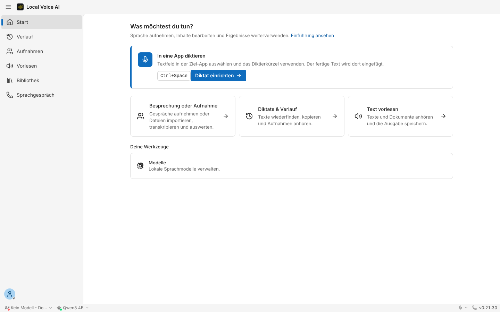
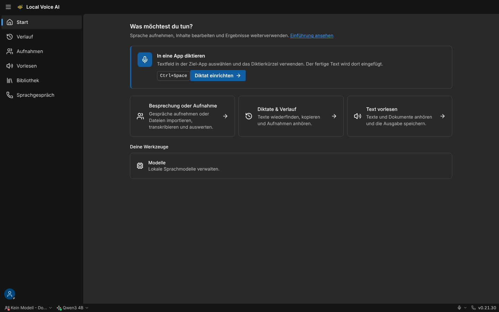
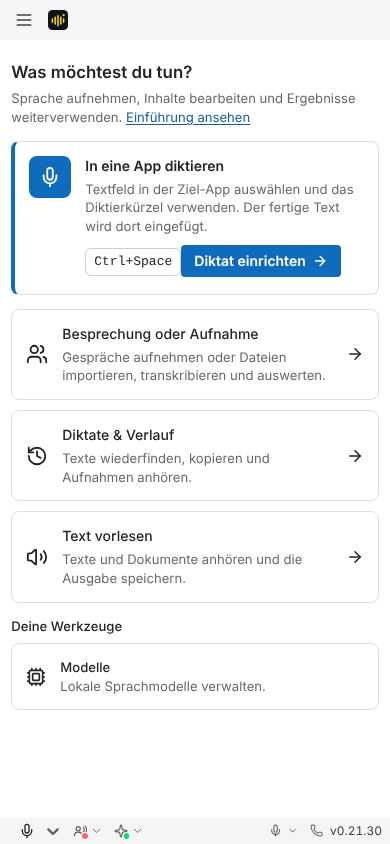
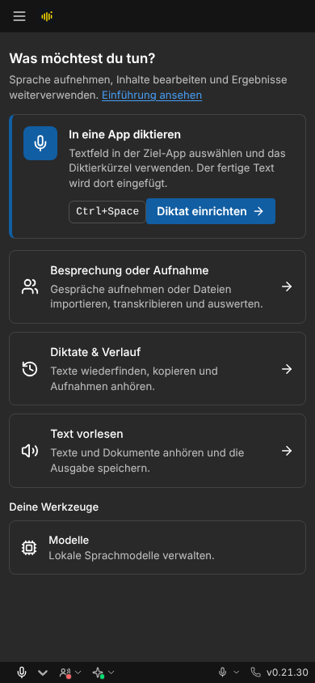

Patrick 05.11.2026: Die Versionsnummer steht in der Fußleiste immer ganz rechts, hinter Mikrofon und Telefon. Klick sucht nach Updates; ein Angebot wird wie bisher hervorgehoben (↑). Zugänglicher Name beginnt mit dem sichtbaren Text („v0.21.30, Nach Updates suchen“). Schmal (390 px) bleibt die Leiste einzeilig.



